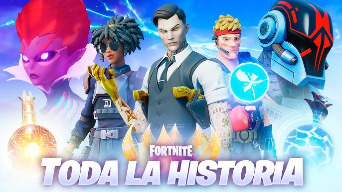

El origen de Fortnite
Fortnite es un videojuego desarrollado por Epic Games y lanzado en 2017. Su popularidad creció rápidamente gracias a su modo Battle Royale, que atrajo a millones de jugadores en todo el mundo. A lo largo de los años, el juego ha evolucionado a través de múltiples temporadas y capítulos, cada uno con eventos únicos que han cambiado la historia y el mapa del juego.
Modos de juego
El juego se divide en tres modos principales:
- Battle Royale: El modo más popular, donde 100 jugadores compiten en una isla para ser el último en pie.
- Salvar el Mundo: Un modo cooperativo en el que los jugadores luchan contra hordas de enemigos mientras construyen defensas.
- Modo Creativo: Un espacio donde los jugadores pueden diseñar sus propios mapas y minijuegos.
Eventos históricos en Fortnite
Fortnite ha sido reconocido por sus eventos en vivo dentro del juego, los cuales han marcado hitos en su historia:
- 🌑 El meteorito (Capítulo 1 - Temporada 3): Un meteorito apareció en el cielo y terminó impactando el mapa, destruyendo parte de él.
- 🕳️ El agujero negro (Capítulo 2 - Temporada 1): El mapa original desapareció y fue reemplazado por un nuevo mundo tras un evento masivo.
- 🟣 La Reina del Cubo (Capítulo 3 - Temporada 8): Una batalla épica contra un ejército de cubos puso en peligro el mundo de Fortnite.
- 🎤 Eventos musicales: Conciertos en vivo con artistas como Marshmello, Travis Scott y Ariana Grande, redefiniendo la interacción en videojuegos.
Impacto cultural
Fortnite no solo ha revolucionado los videojuegos, sino que también ha influenciado la cultura pop con sus colaboraciones en películas, series y marcas de ropa. Ha sido un punto de encuentro para millones de jugadores y ha generado una comunidad global activa en redes sociales, Twitch y YouTube.
